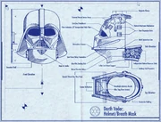
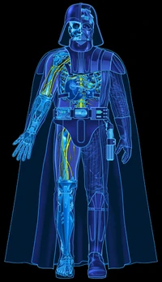

Who Is Darth Vader?
Darth Vader is a fictional character in the Star Wars franchise. The character is the central antagonist of the original trilogy and, as Anakin Skywalker, is one of the main protagonist throughout the prequel trilogy. Star Wars creator George Lucas has collectively referred to the first six episodic films of the franchise as "the tragedy of Darth Vader". He has become one of the most iconic villains in popular culture, and has been listed among the greatest villains and fictional characters ever.His masked face has become one of the most iconic character designs of all time.
Originally a slave on Tatooine, Anakin Skywalker is a Jedi prophesied to bring balance to the Force. He is lured to the dark side of the Force by Chancellor Sheev Palpatine / Darth Sidious and becomes a Sith Lord, assuming the title of Darth Vader. After a lightsaber battle with his former mentor Obi-Wan Kenobi on Mustafar, in which he is severely injured, Vader is transformed into a cyborg. He then serves the Galactic Empire for over two decades as its chief enforcer. Vader ultimately redeems himself by saving his son, Luke Skywalker, and killing Palpatine, sacrificing his own life in the process. He is also the secret husband of Padmé Amidala, the biological father of Princess Leia, and the grandfather of Kylo Ren (Ben Solo). In the non-canonical Star Wars Legends continuity, he is also the grandfather of Ben Skywalker, his eponym Anakin Solo, Jaina Solo and Darth Caedus (Jacen Solo), and the great-grandfather of Allana Solo.
The character has been portrayed by numerous actors: David Prowse physically portrayed Vader while James Earl Jones has voiced him in all of the films and some television shows, and Sebastian Shaw portrayed the unmasked Anakin in Return of the Jedi, as well as the character's spirit in the original release of that film. Jake Lloyd played Anakin Skywalker as a child in The Phantom Menace, the first film of the prequel trilogy, while Hayden Christensen played him as a young adult in the following two films, post-2004 releases of Return of the Jedi, and Obi-Wan Kenobi. In addition to the first six Star Wars films, the character appears in the anthology film Rogue One. He also appears in television series (most substantially The Clone Wars) and numerous iterations of the Star Wars Expanded Universe, including video games, novels, and comic books. Due to Vader's popularity, various merchandise of the character, such as action figures and replicas of his lightsaber, has been produced.
What Does Darth Vader Do?
Once Anakin Skywalker but, rechristened as Darth Vader, he became an agent of evil. Sidious assumed the mantle of Emperor, and Vader helped the Empire destroy the Jedi Order; without mercy, Anakin led a legion of clones into the Jedi Temple, and personally killed both fully trained Jedi and novice younglings alike.
Darth Vader's titles are Sith Lord and Supreme Commander of the Imperial Fleet. Vader is the Sith Apprentice of Emperor Palpatine. After completing his original assignment of purging the Jedi Order, his main mission was to squelch the Rebellion against the Empire.
In Canon, life of Vader is now described in two comics series:
- Star Wars: Darth Vader
- Star Wars: Darth Vader: Dark Lord of the Sith
Without mentioning details, Vader was task-oriented. Those tasks would (of course) mostly came from his master Palpatine. Sometimes he had to work alone, sometimes in small groups, sometimes he commanded fleets and armies ... Palpatine often tested him by pitting him against other Imperials, Vader tried to clandestinely work for his own interests, but Palpatine mostly foresaw this. Vader acted according to Palpatine's plans even if he didn't know that (this is one of the reasons Vader feared and respected Palpatine). Vader did have some time for himself (for example to build his castle on Mustafar), and he used this to better understand Dark Side of the Force.
Overall, Vader was not tied to specific unit, system or Galactic Sector, so he didn't regularly attend boring administrative meetings if they didn't concern his current mission.
Abilities
- Force Choke
- Telepathy
- Force Healing
- Force Crush
- Tutaminis
- Precognition
Force choke, a variant of and, at times, synonymous with Force grip, was a dark side Force power where one would use the the Force to choke or strangle a victim, oftentimes with a grip-like gesture. It was a technique of telekinesis that was frequently employed by the Sith and other users of the dark side of the Force, although there were some cases where Jedi or other users of the light side would use the technique.
Telepathy, known to the Chiss as Second Sight, was the ability to mentally communicate and interact with other individuals, as well as to transmit and receive information to and from the minds of others.
Force healing, Force heal, or Cure was a power that used the Force to accelerate the natural healing process rapidly, and could be used to heal the most fatal of wounds and injuries.
One of the most violent Force abilities known to the Sith and the Jedi, this deadly technique lifted the opponent into the air and as they were floating, their body would implode as it was crushed by the Force.
Tutaminis was an umbrella title used by the Jedi Order to classify Force abilities related to energy absorption. Designated as one in a family of Control abilities, tutaminis techniques were taught to Jedi Initiates within the Jedi academy throughout the history of the Order. While taught to all Jedi during the days of the Galactic Republic, it was a rare feat to be capable of dissipating concentrated energy such as what makes up a blasterbolt or lightsaber blade. While it was named and practiced by the Jedi Order, tutaminis was not restricted to use by Jedi. In fact, most Force-based groups and Force-users in general learned to use or at least control some of the abilities taught at the Temple.
Precognition, known to the Chiss as "Third Sight," was an ability of the Force that Anakin Skywalker utilized during his time as a Jedi Knight and Sith Lord to peer into the future to know where and when an attack was coming from. Jedi Master Sifo-Dyas was gifted with the power of foresight, and he earned a seat on the Jedi High Council prior to the Invasion of Naboo. Chiss individuals, nearly always females, who were born to be Force-sensitive, were born with the ability of precognition. Because of this, they were used by the Chiss to navigate and pilot their ships through the Unknown Regions, as well as finding and mapping temporary hyperlanes. Such Chiss navigators were known as ozyly-esehembo. Only Chiss children had precognitive power to safely guide their ships at the speed the Aristocras demanded, and as the Chiss grew older the ability faded, regardless of the amount of training or practice the individual undertook. Vah'nya was rare among the Chiss due to keeping her ability after childhood. She also had the ability of Second Sight. Un'hee was also capable of using precognition. The Force-sensitive child Eila could use this ability.
Darth Vader's suit

Following his near-fatal duel with Obi-Wan Kenobi on Mustafar in 19 BBY, Darth Vader received a mobile life support system encased in a suit of distinctive black armor.
Darth Vader's armor, serial number: E-3778Q-1, was designed to maintain and protect the young Sith apprentice's charred body while exuding an air of intimidation and control. His suit followed an ancient Sith tradition, in which the warriors of the dark side of the Force would adorn themselves in heavy armor. The suit's construction incorporated Sith alchemy to augment Vader's severely diminished physical strength and vitality.
he armor encased Vader completely, creating a seal to protect his charred skin and lungs. It was also uncomfortable to wear. Vader slowly learned to live with the isolation and anonymity that the suit imposed on him. Vader had to change his lightsaber style to compensate for the weight, bulk and inflexibility of his armor. The electronics of the suit were sensitive to electrical discharges. Vader later added a limited amount of insulation to the suit after discovering this vulnerability. To escape the armor's claustrophobic nature, Vader had several pressurized meditation chambers built where he could remove his mask and suit and still survive. Vader longed to be less dependent on his armor and tried at times to function without it, but he labored in vain.
his suit consists of:
- Helmet 
- Torso 
- Protective Systems
- Gloves And Boots
Like traditional Sith armor and patterned after that of ancient Sith droids, Darth Vader's suit was made to be both intimidating and fearsome. The front was carved out to fit around his head and show his "face." This helmet had a raised ridge that ran from between his eyes to the back of his head, where it merged into the durasteel, obsidian, and plasteel of the helmet itself. In addition, it was also rumored that the helmet's already strong metallic hull had also been further strengthened via dark side alchemy, with the specific technique not being found in the database of the Rhinnal Medical Academy. Two less jagged ridges swept over the eyes of Vader's mask proper and served to accent them. The jagged edges also acted as a means to deflect potential energy blows onto the thick shoulder armor. This helmet locked into the mask, via a pressurized seal comparable in integrity to a Class C spacesuit. Besides protection, it also stuck needles into Vader's skin when fixed in place, which feed neurological data on brainwave activity to the central chest computer, and possessed radiator conduction pads that were installed into the helmet as a means to allow excess heat to bleed through the metal surface.
Vader's pectoral armor appeared to be one piece that protected his entire upper torso. The durasteel material was gray in hue with several black vertical stripes. Around the neck of the full-shoulder pauldron was a black chain, and connected to the upper seam of the armor was Vader's black, flowing, nearly floor-length armorweave cape. Coming from beneath the pectoral armor was a black tabard which was open in the front and reached down to the ground. The shoulder armor itself weighed 12.2 kg overall, was resistant to both blasters and energy blades, and was capable of withstanding hits from both weapon types with only minor surface pitting. A drawback, however, was that its weight made it difficult for Vader to raise his lightsaber to full height, though he could still raise his hands above his head if pressed. Vader's pectoral armor appeared to be one piece that protected his entire upper torso. The durasteel material was gray in hue with several black vertical stripes. Around the neck of the full-shoulder pauldron was a black chain, and connected to the upper seam of the armor was Vader's black, flowing,near floor-length armorweave cape. Coming from beneath the pectoral armor was a black tabard which was open in the front and reached down to the ground. The shoulder armour itself weighed 12.2 kg overall, was resistant to both blasters and energy blades, and was capable of withstanding hits from both weapon types with only minor surface pitting. A drawback, however, was that its weight made it difficult for Vader to raise his lightsaber to full height, though he could still raise his hands above his head if pressed.
Vader wore a black ribbed, padded, multi-ply body glove that covered everything below his neck. This flexible, quilted suit was blast-dampening, and was made of a fireproof material that provided some protection against flames and corrosive gasses. The armor was constructed in ten layers, with each subdivided into three primary layers. The first primary layer was a self-sealing surface similar in function to a standard Emnat suit worn by most Imperial military officers. The outermost layer was a black insulating shell, and the inner layer was an Andwa gel-crystal matrix. The second primary layer dealt with impact protection from physical shock due to the irreversible damage to the torso. The first layer was Reifflex cellular padding which was also utilized for some Stormtrooper helmets; the second layer was orthofabric; the third layer was mylar laminate; the fourth layer was polychlorophene-2 fiber weave, while the final layer contained a rechargeable energy suit. The third primary layer related to the pressure and temperature regulatory functions of the suit. The first layer contained plastex pressure garments; the second layer related to temperature stasis and the third layer was a compression sheath.
On his hands he wore black reinforced gauntlets, the right glove being a Mandalorian crushgaunt fitted around one of Lord Kaan's indestructible Sith amulets, and modified to include grip-augmentation circuitry. The gauntlets were also made of a micronized Mandalorian iron weave to protect Vader against glancing lightsaber blows during the patient's physical therapy sparring sessions, as well as deflecting a direct hit from a blaster bolt. The gloves, as well as the boots, contained magnetic clasps that snapped onto Vader's prosthesis tubing, in order to prevent him from shifting equipment or clothing during combat. Because of Vader's prostheses being effectively skeletal in nature, the gloves and boots also contained padding to provide definition, with the added benefit of confusing enemies as to which portions of Vader were cybernetic.